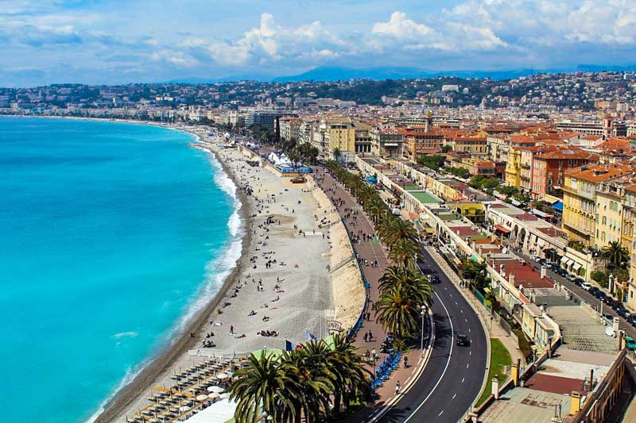

Located in Paris, the Eiffel tower is one of the most popular places in the world. Indeed, it’s the icon of Paris. The tower stands 320 meters and consists of 8 000 parts of metals. When Gustave Eiffel designed and constructed the tower in 1889, critics disliked the idea.
However, over time, it has come to be among the most preferred destinations to see in the world. Apart from viewing the tower, you can go up to the top level (276 meters high from the ground) to get a complete view of the expanse of the city.
2. Verdon Gorge Canyon
In southern France, you can visit the Verdon Gorge, a river passing through high canyons. The river is 700km long, while the canyon cliffs go as high as 700 meters from the ground. The turquoise waters from the mineral-rich rocks make the destination a lively scene to behold, and one of the most top-rated tourist attractions in France.
Some of the activities you can do include kayaking, rafting, mountain climbing, hiking, and paragliding. Remember to mark the destination on your carte a gratter to ensure that you do not miss it on your intended day of travel to France.
3. Saint Michel
On the island of Normandy, you can visit Saint Michel, the religious site that is one of the most famous destinations in entire Europe. The landmark is one kilometer from the coast of Northwest of France. Mont-Saint-Michel and its Bay are often called France’s most picturesque UNESCO World Heritage Site.
The lace staircase, which is 900 steps high, leads you to the top of the abbey. Here, you will see the gallery of various items housed in this medieval monastic structure. The museum also holds shows where people can learn more about the monument that was once the destination of pilgrimages.
4. The Palace of Versailles
Since the late 17th century, the Palace of Versailles used to be the residence of the royal family of the Kingdom. This palace is where King Louis XIV lived. The place remained the royal residence until 1789, and it is in Île-de-France, 20 km Southwest of Paris.
The palace also falls under popular destinations with many visitors in Europe. This magnificent attraction stays open every day, and the tourists can go through the numerous galleries to learn more about this UNESCO Heritage site. The palace and park of Versailles were added to the list in 1979.
5. Chateau De Chambord
Chambord Chateau is an incomplete chateau in Loire valley. The building lies in a forest – the French largest park. When visiting, you will marvel at the outstanding and diversity of the French architectural skills.
Constructed since 1519, the current state of the chateau took 28 years. However, the construction never completed for several centuries. The inner rooms have diversity in style – both Frech and Italian. It’s part of the UNESCO Heritage site of The Loire Valley between Sully-sur-Loire and Chalonnes.
6. The French Riviera

The Southerneast Mediterranean coast, also known as Côte d’Azur, is a famous destination that is popular for its beaches. The name “Côte d’Azur” means “Coast of Blue” when translated to English. The place got its name from the deep blue waters of the Mediterranean Sea.
People usually flood the beaches on Côte d’Azur during Summer for sunbathing. Other activities like yachting are popular in the region.
7. Louvre Museum
The largest art museum in the world, the Louvre, is also a historic monument in Paris, France. The museum is a former royal palace where French Kings dwelt. The museum tops in art gallery collections, including many Western Civilization collections.
In this museum, you can see the 30 000 collections of art. The collection is massive, and you will need several weeks to finish them. Plan a long visit to Paris to experience the Louvre Museum’s collections in full.
8. Disneyland
Another top-rated destination in Paris is Disneyland. The park complex consists of various shows and features. Disneyland also has high-class hotels to rest in while touring the park.
Since its launch in 1992, the destination has received more than 250 million visits, making it one of the most famous destinations in Europe. With 5 800 hotel rooms, you are sure to get an amazing place to rest while touring Paris.